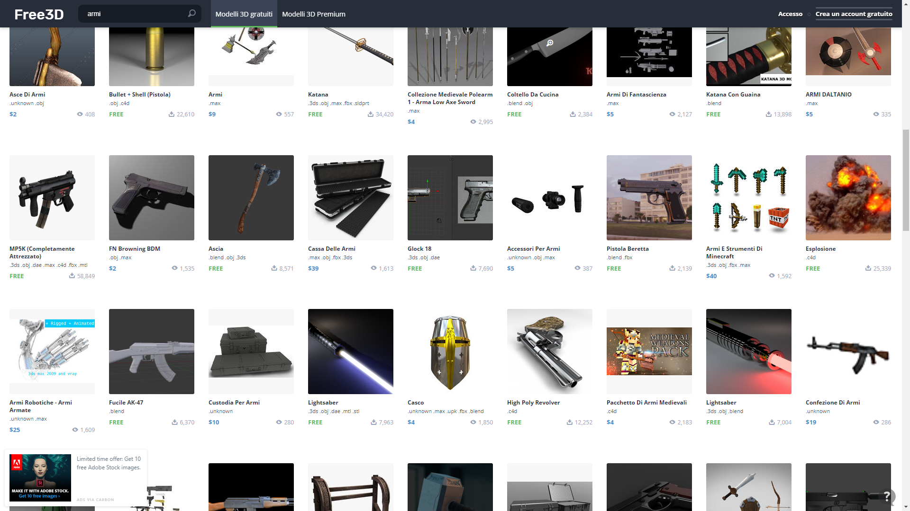
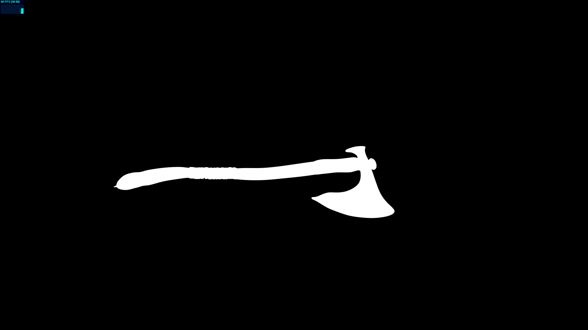

**Product presentation Journal**
2 febbraio 2020 - Inizializzazione del progetto, scelta del tema principale e ricerca delle mesh.
-------------------------------------------------------------------------------

3 febbraio 2020 - Creazione di un file di tipo .html e caricamento, posizionamento, ridimensionamento delle mesh scaricate.
-------------------------------------------------------------------------------

4 febbraio 2020 - Inizio creazione progressiva del fragmentShader per la scena.
-------------------------------------------------------------------------------


7 febbraio 2020 - Montaggio di diversi possibili interfacce.
-------------------------------------------------------------------------------

10 febbraio 2020 - Download di substance painter per la creazione di texture da assegnare ai modelli.
-------------------------------------------------------------------------------

15 febbraio 2020 - Utilizzo di Autodesk-Maya per problemi di mappattura delle texture dovuti alle mesh.
-------------------------------------------------------------------------------

22 febbraio 2020 - Caricamento delle textures sulle mesh e aggiunta di fonti di luce multiple.
-------------------------------------------------------------------------------


23 febbraio 2020 - Creazione del menù di supporto alla navigazione della scena.
-------------------------------------------------------------------------------

6 giugno 2020 - Aggiunta di un elemento al menu.
-------------------------------------------------------------------------------

7 giugno 2020 - Fissaggio sorgenti luminose per ogni prodotto.
-------------------------------------------------------------------------------

8 giugno 2020 - Aggiunta colore su alcuni elementi del menù.
-------------------------------------------------------------------------------